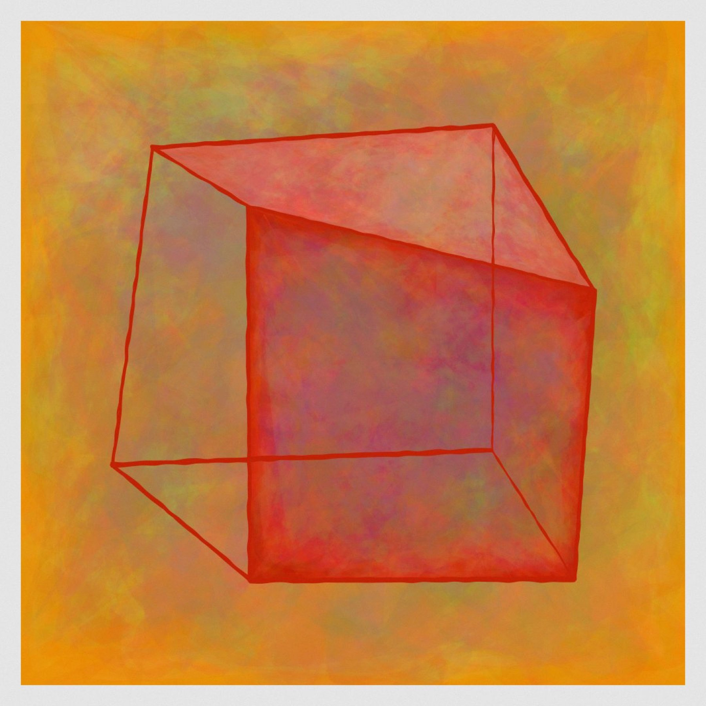

Chips are extracted live from each series' actual thumbnails, coverage-weighted, sorted dark to light. In the real build they'd be precomputed and stored in studio.json.
Your actual cnrd-mark SVG, stamped sanguine with a slight rotation and a doubled misregistered border, sitting in the colophon the way a seal sits on a print.
While a plate loads, the placeholder is one of the 122 incomplete open cubes, seeded per work and drawn with the pencil tremor. When the image arrives the cube resolves away. Loading is staged here so you can watch it.
The section numerals drawn with progressively more tremor, I clean through VI collapsing.
Press-proof furniture on the colophon: registration crosses and a colour bar of the site's own inks.
Album corners holding the hero plate on piece pages.
